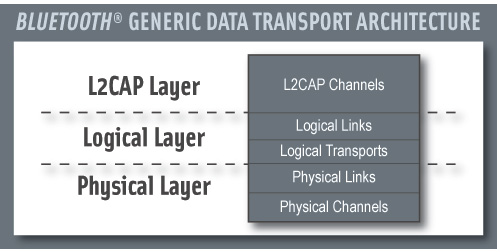

|

The Bluetooth data transport system follows a layered
architecture. This description of the Bluetooth system
describes the Bluetooth core transport layers up to and
including L2CAP channels. All Bluetooth operational modes
follow the same generic transport architecture.
For efficiency and legacy reasons, the Bluetooth transport
architecture includes a sub-division of the logical layer,
distinguishing between logical links and logical transports. This
sub-division provides a general and commonly understood concept of a
logical link that provides an independent transport between two or more
devices. The logical transport sub-layer is required to describe the
inter-dependence between some of the logical link types, mainly for
reasons of legacy behavior.
The Bluetooth 1.1 specification described the ACL and SCO
links as physical links. With the addition of extended SCO (eSCO) and
for future expansion it is better to consider these as logical transport
types, which more accurately encapsulates their purpose. However, they
are not as independent as might be desired, due to their shared use of
resources such as the LT_ADDR and acknowledgement/repeat request (ARQ)
scheme. Hence the architecture is incapable of representing these
logical transports with a single transport layer. The additional logical
transport layer goes some way towards describing this behavior.
Core Traffic BearersThe Bluetooth core system provides
a number of standard traffic bearers for the transport of service
protocol and application data.
The logical links are named using the names of the associated logical
transport and a suffix that indicates the type of data that is
transported: C for control links carrying LMP messages, U for L2CAP
links carrying user data (L2CAP PDUs) and S for stream links carrying
unformatted synchronous or isochronous data. It is common for the suffix
to be removed from the logical link without introducing ambiguity, thus
a reference to the default ACL logical transport can be resolved to
mean the ACL-C logical link in cases where the LMP protocol is being
discussed, or the ACL-U logical link when the L2CAP layer is being
discussed.
The mapping of application traffic types to Bluetooth core
traffic bearers is based on matching the traffic characteristics with
the bearer characteristics. It is recommended to use these mappings as
they provide the most natural and efficient method of transporting the
data with its given characteristics.
An application, or an implementation of the Bluetooth core
system, may choose to use a different traffic bearer or a different
mapping to achieve a similar result. For example, in a piconet with only
one slave, the master may choose to transport L2CAP broadcasts over the
ACL-U logical link rather than over the ASB-U or PSB-U logical links.
This will probably be more efficient in terms of bandwidth if the
physical channel quality is not too degraded. Use of alternative
transport paths is only acceptable if the characteristics of the
application traffic type are preserved.
Application traffic types are used to classify the types of data that
may be submitted to the Bluetooth core system. The original
data traffic type may not be the same as the type that is submitted to
the Bluetooth core system if an intervening process modifies
it. For example, video data is generated at a constant rate but an
intermediate coding process may alter this to variable rate, e.g. by
MPEG4 encoding. For the purposes of the Bluetooth core system,
only the characteristic of the submitted data is of interest.
Framed Data Traffic The L2CAP layer services provide a
frame-oriented transport for asynchronous and isochronous user data. The
application submits data to this service in variable-sized frames (up
to a negotiated maximum for the channel) and these frames are delivered
in the same form to the corresponding application on the remote device.
There is no requirement for the application to insert additional framing
information into the data, although it may do so if this is required.
(Such framing is invisible to the Bluetooth core system.)
Connection-oriented L2CAP channels may be created for transport of
unicast (point-to-point) data between two Bluetooth enabled
devices. A connectionless L2CAP channel exists for broadcasting data. In
the case of piconet topologies the master device is always the source
of broadcast data and the slave device(s) are the recipients. Traffic on
the broadcast L2CAP channel is uni-directional. Unicast L2CAP channels
may be uni-directional or bi-directional.
L2CAP channels have an associated QoS setting that defines
constraints on the delivery of the frames of data. These QoS settings
may be used to indicate, for example, that the data is isochronous and
therefore has a limited lifetime after which it becomes invalid, that
the data should be delivered within a given time period, or that the
data is reliable and should be delivered without error, however long
this takes.
The L2CAP channel manager is responsible for arranging to transport
theL2CAP channel data frames on an appropriate baseband logical link,
possibly multiplexing this onto the baseband logical link with other
L2CAP channels with similar characteristics.
Top
Unframed Data TrafficIf the application does not require
delivery of data in frames, possibly because it includes in-stream
framing, or because the data is a pure stream, then it may avoid the use
of L2CAP channels and make direct use of a baseband logical link.
The Bluetooth core system supports the direct transport of
application data that is isochronous and of a constant rate (either
bit-rate or frame-rate for preframed data), using a SCO-S or eSCO-S
logical link. These logical links reserve physical channel bandwidth and
provide a constant rate transport locked to the piconet clock. Data is
transported in fixed size packets at fixed intervals with both of these
parameters negotiated during channel establishment. eSCO links provide a
greater choice of bit-rates and also provide greater reliability by
using limited retransmission in case of error. Enhanced Data Rate
operation is supported for eSCO, but not for SCO logical transports. SCO
and eSCO logical transports do not support multiplexed logical links or
any further layering within the Bluetooth core. An application
may choose to layer a number of streams within the submitted SCO/eSCO
stream, provided that the submitted stream is, or has the appearance of
being, a constant rate stream.
The application chooses the most appropriate type of logical link
from those available at the baseband, creates and configures it to
transport the data stream and releases it when completed. (The
application will normally also use a framed L2CAP unicast channel to
transport its C-plane information to the peer application on the remote
device.)
If the application data is isochronous and of a variable rate, then
this may only be carried by the L2CAP unicast channel, and hence will be
treated as framed data.
Reliability of Traffic BearersBluetooth technology is a
wireless communications system. In poor RF environments, this system
should be considered inherently unreliable. To counteract this the
system provides levels of protection at each layer. The baseband packet
header uses forward error correcting (FEC) coding to allow error
correction by the receiver and a header error check (HEC) to detect
errors remaining after correction. Certain Baseband packet types include
FEC for the payload. Furthermore, some baseband packet types include a
cyclic redundancy error check (CRC).
On ACL logical transports the results of the error detection
algorithm are used to drive a simple ARQ protocol. This provides an
enhanced reliability by re-transmitting packets that do not pass the
receiver’s error checking algorithm. It is possible to modify this
scheme to support latency-sensitive packets by discarding an
unsuccessfully transmitted packet at the transmitter if the packet’s
useful life has expired. eSCO links use a modified version of this
scheme to improve reliability by allowing a limited number of
retransmissions.
The resulting reliability gained by this ARQ scheme is only as
dependable as the ability of the HEC and CRC codes to detect errors. In
most cases this is sufficient, however it has been shown that for the
longer packet types the probability of an undetected error is too high
to support typical applications, especially those with a large amount of
data being transferred.
The L2CAP layer provides an additional level of error control that is
designed to detect the occasional undetected errors in the baseband
layer and request retransmission of the affected data. This provides the
level of reliability required by typical Bluetooth
applications.
Broadcast links have no feedback route, and are unable to use the ARQ
scheme (although the receiver is still able to detect errors in
received packets). Instead each packet is transmitted several times in
the hope that the receiver is able to receive at least one of the copies
successfully. Despite this approach there are still no guarantees of
successful receipt, and so these links are considered unreliable.
In summary, if a link or channel is characterized as reliable this
means that the receiver is capable of detecting errors in received
packets and requesting retransmission until the errors are removed. Due
to the error detection system used some residual (undetected) errors may
still remain in the received data. For L2CAP channels the level of
these is comparable to other communication systems, although for logical
links the residual error level is somewhat higher.
The transmitter may remove packets from the transmit queue such that
the receiver does not receive all the packets in the sequence. If this
happens detection of the missing packets is delegated to the L2CAP
layer.
On an unreliable link the receiver is capable of detecting errors in
received packets but cannot request retransmission. The packets passed
on by the receiver may be without error, but there is no guarantee that
all packets in the sequence are received. Hence the link is considered
fundamentally unreliable. There are limited uses for such links, and
these uses are normally dependent on the continuous repetition of data
from the higher layers while it is valid.
Stream links have a reliability characteristic somewhere between a
reliable and an unreliable link, depending on the current operating
conditions.
Top
Transport Architecture Entities
Bluetooth Generic Packet StructureThe general packet
structure reflects the architectural layers found in the Bluetooth
system. The packet structure is designed for optimal use in normal
operation.
Packets normally only include the fields that are necessary to
represent the layers required by the transaction. Thus a simple inquiry
request over an inquiry scan physical channel does not create or require
a logical link or higher layer and therefore consists only of the
channel access code (associated with the physical channel). General
communication within a piconet uses packets that include all of the
fields, as all of the architectural layers are used.
All packets include the channel access code. This is used to identify
communications on a particular physical channel, and to exclude or
ignore packets on a different physical channel that happens to be using
the same RF carrier in physical proximity.
There is no direct field within the Bluetooth packet
structure that represents or contains information relating to physical
links. This information is implied in the logical transport address
(LT_ADDR) carried in the packet header.
Most packets include a packet header. The packet header is always
present in packets transmitted on physical channels that support
physical links, logical transports and logical links. The packet header
carries the LT_ADDR, which is used by each receiving device to determine
if the packet is addressed to the device and is used to route the
packet internally.
The packet header also carries part of the LC protocol that is
operated per logical transport (except for ACL and SCO transports that
operate a shared LC protocol carried on either logical transport).
The EDR packets have a guard time and synchronization sequence before
the payload. This is a field used for physical layer change of
modulation scheme.
The payload header is present in all packets on logical transports
that support multiple logical links. The payload header includes a
logical link identifier field used for routing the payload and a field
indicating the length of the payload. Some packet types also include a
CRC after the packet payload that is used to detect most errors in
received packets. EDR packets have a trailer after the CRC.
The packet payload is used to transport the user data. The
interpretation of this data is dependent on the logical transport and
logical link identifiers. For ACL logical transports LMP messages and
L2CAP signals are transported in the packet payload, along with general
user data from applications. For SCO and eSCO logical transports the
payload contains the user data for the logical link.
Physical ChannelsThe lowest architectural layer in the Bluetooth
wireless technology system is the physical channel. A number of types
of physical channels are defined. All Bluetooth physical
channels are characterized by an RF frequency combined with temporal
parameters and restricted by spatial considerations. For the basic and
adapted piconet physical channels, frequency hopping is used to change
frequency periodically to reduce the effects of interference and for
regulatory reasons.
Two Bluetooth enabled devices use a shared physical channel
for communication. To achieve this their transceivers need to be tuned
to the same RF frequency at the same time, and they need to be within a
nominal range of each other.
Given that the number of RF carriers is limited and that many Bluetooth
enabled devices may be operating independently within the same spatial
and temporal area, there is a strong likelihood of two independent Bluetooth
enabled devices having their transceivers tuned to the same RF carrier,
resulting in a physical channel collision. To mitigate the unwanted
effects of this collision each transmission on a physical channel starts
with an access code that is used as a correlation code by devices tuned
to the physical channel. This channel access code is a property of the
physical channel. The access code is always present at the start of
every transmitted packet.
Four Bluetooth physical channels are defined. Each is
optimized and used for a different purpose. Two of these physical
channels (the basic piconet channel and adapted piconet channel) are
used for communication between connected devices and are associated with
a specific piconet. The remaining physical channels are used for
discovering Bluetooth enabled devices (the inquiry scan
channel) and for connecting Bluetooth enabled devices (the page
scan channel).
A Bluetooth enabled device can only use one of these
physical channels at any given time. In order to support multiple
concurrent operations the device uses time division multiplexing between
the channels. In this way, a Bluetooth enabled device can
appear to operate simultaneously in several piconets, as well as being
discoverable and connectable.
Whenever a Bluetooth device is synchronized to the timing,
frequency, and access code of a physical channel, it is said to be
‘connected’ to this channel (whether or not it is actively involved in
communications over the channel). The Bluetooth specification
assumes that a device is only capable of connecting to one physical
channel at any time. Advanced devices may be capable of connecting
simultaneously to more than one physical channel, but the specification
does not assume that this is possible.
Top
Basic Piconet Channel
OverviewThe basic piconet channel is used for communication
between connected devices during normal operation.
CharacteristicsThe basic piconet channel is characterized by a
pseudo-random sequence hopping through the RF channels. The hopping
sequence is unique for the piconet and is determined by the Bluetooth
enabled device address of the master. The phase in the hopping sequence
is determined by the Bluetooth clock of the master. All Bluetooth
enabled devices participating in the piconet are time- and
hop-synchronized to the channel.
The channel is divided into time slots where each slot corresponds to
an RF hop frequency. Consecutive hops correspond to different RF hop
frequencies. The time slots are numbered according to the Bluetooth
clock of the piconet master. Packets are transmitted by Bluetooth
devices participating in the piconet aligned to start at a slot
boundary. Each packet starts with the channel’s access code, which is
derived from the Bluetooth device address of the piconet.
On the basic piconet channel the master controls access to the
channel. The master starts its transmission in even-numbered time slots
only. Packets transmitted by the master are aligned with the slot start
and define the piconet timing. Packets transmitted by the master may
occupy up to five time slots depending on the packet type.
Each master transmission is a packet carrying information on one of
the logical transports. Slave devices may transmit on the physical
channel in response. The characteristics of the response are defined by
the logical transport that is addressed.
For example, on the asynchronous connection-oriented logical
transport the addressed slave device responds by transmitting a packet
containing information for the same logical transport that is nominally
aligned with the next (odd numbered) slot start. Such a packet may
occupy up to five time slots, depending on the packet type. On a
broadcast logical transport no slaves are allowed to respond.
A special characteristic of the basic piconet physical channel is the
use of some reserved slots to transmit a beacon train. The beacon train
is only used if the piconet physical channel has parked slaves
connected to it. In this situation the master transmits a packet in the
reserved beacon train slots (these packets are used by the slave to
resynchronize to the piconet physical channel). The master may transmit
packets from any logical transport onto these slots, providing there is a
transmission starting in each of the slots. In the case where there is
information from the parked slave broadcast (PSB) logical transport to
be transmitted then this is transmitted in the beacon train slots and
takes priority over any other logical transport.
TopologyA basic piconet channel may be shared by any number of Bluetooth
enabled devices, limited only by the resources available on the piconet
master device. Only one device is the piconet master, all others being
piconet slaves. All communication is between the master and slave
devices. There is no direct communication between slave devices on the
piconet channel.
There is, however, a limitation on the number of logical transports
that can be supported within a piconet. This means that although there
is no theoretical limit to the number of Bluetooth enabled
devices that share a channel, there is a limit to the number of these
devices that can be actively involved in exchanging data with the
master.
Supported LayersThe basic piconet channel supports a number of
physical links, logical transports, logical links and L2CAP channels
used for general purpose communications.
Adapted Piconet Channel
OverviewThe adapted piconet channel differs from the basic
piconet channel in two ways. First the frequencies on which the slaves
transmit are the same as the preceding master transmit frequency. In
other words, the frequency is not recomputed between master and
subsequent slave packets. The second way in which the adapted piconet
channel differs from the basic piconet channel is that the adapted type
can be based on fewer than the full 79 frequencies. A number of
frequencies may be excluded from the hopping pattern by being marked as
“unused.” The remainder of the 79 frequencies are included. The two
sequences are the same except that whenever the basic pseudo-random
hopping sequence would have selected an unused frequency, it is replaced
with an alternative chosen from the used set.
Because the adapted piconet channel uses the same timing and access
code as the basic piconet channel, the two channels are often
coincident. This provides a deliberate benefit as it allows slaves in
either the basic piconet channel or the adapted piconet channel to
adjust their synchronization to the master.
The topology and supported layers of the adapted piconet physical
channel are identical to the basic piconet physical channel.
Top
Inquiry Scan Channel
OverviewIn order for a device to be discovered, an inquiry scan
channel is used. A discoverable device listens for inquiry requests on
its inquiry scan channel and then sends responses to these requests. In
order for a device to discover other devices, it iterates (hops) through
all possible inquiry scan channel frequencies in a pseudo-random
fashion, sending an inquiry request on each frequency and listening for
any response.
CharacteristicsInquiry scan channels follow a slower hopping
pattern and use an access code to distinguish between occasional
occupancy of the same radio frequency by two co-located devices using
different physical channels.
The access code used on the inquiry scan channel is taken from a
reserved set of inquiry access codes that are shared by all Bluetooth
enabled devices. One access code is used for general inquiries and a
number of additional access codes are reserved for limited inquiries.
Each device has access to a number of different inquiry scan channels.
As all of these channels share an identical hopping pattern, a device
may concurrently occupy more than one inquiry scan channel if it is
capable of concurrently correlating more than one access code.
A device using one of its inquiry scan channel remains passive until
it receives an inquiry message on this channel from another Bluetooth
enabled device. This is identified by the appropriate inquiry access
code. The inquiry scanning device will then follow the inquiry response
procedure to return a response to the inquiring device.
In order for a device to discover other Bluetooth enabled
devices, it uses the inquiry scan channel of these devices to send
inquiry requests. As it has no prior knowledge of the devices to
discover, it cannot know the exact characteristics of the inquiry scan
channel.
The device takes advantage of the fact that inquiry scan channels
have a reduced number of hop frequencies and a slower rate of hopping.
The inquiring device transmits inquiry requests on each of the inquiry
scan hop frequencies and listens for an inquiry response. This is done
at a faster rate, allowing the inquiring device to cover all inquiry
scan frequencies in a reasonably short time period.
TopologyInquiring and discoverable devices use a simple
exchange of packets to fulfill the inquiring function. The topology
formed during this transaction is a simple and transient point-to-point
connection.
Supported LayersDuring the exchange of packets between an
inquiring and discoverable device it may be considered that a temporary
physical link exists between these devices. However, the concept is
quite irrelevant as it has no physical representation but is only
implied by the brief transaction between the devices. No further
architectural layers are considered to be supported.
Page Scan Channel
OverviewA connectable device (one that is prepared to accept
connections) does sousing an page scan channel. A connectable device
listens for page requests on its page scan channel and enters into a
sequence of exchanges with this device. In order for a device to connect
to another device, it iterates (hops) through all page scan channel
frequencies in a pseudo-random fashion, sending an page request on each
frequency and listening for any response.
CharacteristicsThe page scan channel uses an access code
derived from the scanning device’s Bluetooth device address to
identify communications on the channel. The page scan channel uses a
slower hopping rate than the hop rate of the basic and adapted piconet
channels. The hop selection algorithm uses the Bluetooth device
clock of the scanning device as an input.
A device using its page scan channel remains passive until it
receives a page request from another Bluetooth enabled device.
This is identified by the page scan channel access code. The two devices
will then follow the page procedure to form a connection. Following a
successful conclusion of the page procedure both devices switch to the
basic piconet channel that is characterized by having the paging device
as master.
In order for a device to connect to another Bluetooth
enabled device it uses the page scan channel of the target device in
order to send page requests. If the paging device does not know the
phase of the target device’s page scan channel it therefore does not
know the current hop frequency of the target device. The paging device
transmits page requests on each of the page scan hop frequencies and
listens for a page response. This is done at a faster hop rate, allowing
the paging device to cover all page scan frequencies in a reasonably
short time period.
The paging device may have some knowledge of the target device’s Bluetooth
clock (indicated during a previous inquiry transaction between the two
devices, or as a result of a previous involvement in a piconet with the
device), in which case it is able to predict the phase of the target
device’s page scan channel. It may use this information to optimize the
synchronization of the paging and page scanning process and speed up the
formation of the connection.
TopologyPaging and connectable devices use a simple exchange of
packets to fulfill the paging function. The topology formed during this
transaction is a simple and transient point-to-point connection.
Supported LayersDuring the exchange of packets between a paging
and connectable device it may be considered that a temporary physical
link exists between these devices. However, the concept is quite
irrelevant as it has no physical representation but is only implied by
the brief transaction between the devices. No further architectural
layers are considered to be supported.
Physical LinksA physical link represents a baseband connection
between Bluetooth enabled devices. A physical link is always
associated with exactly one physical channel (although a physical
channel may support more than one physical link).
Within the Bluetooth technology system a physical link is a
virtual concept that has no direct representation within the structure
of a transmitted packet. The access code packet field, together with the
clock and address of the master Bluetooth device, are used to
identify a physical channel. However there is no subsequent part of the
packet that directly identifies the physical link. Instead the physical
link may be identified by association with the logical transport, as
each logical transport is only received on one physical link.
Some physical link types have properties that may be modified. An
example of this is the transmit power for the link. Other physical link
types have no such properties. In the case of physical links with
modifiable properties the LM protocol is used to adapt these properties.
As the LM protocol is supported at a higher layer (by a logical link)
the appropriate physical link is identified by implication from the
logical link that transports the LM signaling.
In the situation where a transmission is broadcast over a number of
different physical links, then the transmission parameters are selected
to be suitable for all of the physical links.
Top
Links Supported by the Basic and Adapted Piconet Physical Channel
The
basic and adapted piconet physical channels support a physical link
which may be active or parked. The physical link is a point-to-point
link between the master and a slave. It is always present when the slave
is synchronized in the piconet.
Active Physical LinkThe physical link between a master and a
slave device is active if a default ACL logical transport exists between
the devices. Active physical links have no direct identification of
their own, but are identified by association with the default ACL
logical transport ID with which there is a one-to-one correspondence.
An active physical link has the associated properties of radio
transmit power in each direction. Transmissions from slave devices are
always directed over the active physical link to the master, and use the
transmit power that is a property of this link in the slave to master
direction. Transmissions from the master maybe directed over a single
active physical link (to a specific slave) or over a number of physical
links (to a group of slaves in the piconet). In the case of
point-to-point transmissions the master uses the appropriate transmit
power for the physical link in question. (In the case of
point-to-multipoint transmissions the master uses a transmit power
appropriate for the set of devices addressed.)
Active physical links may be placed into hold or sniff mode. The
effect of these modes is to modify the periods when the physical link is
active and may carry traffic. Logical transports that have defined
scheduling characteristics are not affected by these modes and continue
according to their pre-defined scheduling behavior. The default ACL
logical transport and other links with undefined scheduling
characteristics are subject to the mode of the active physical link.
Parked Physical LinkThe physical link between a master and a
slave device is parked when the slave remains synchronized in the
piconet but has no default ACL logical transport. Such a slave is also
said to be parked. A beacon train is used to provide regular
synchronization to all parked slaves connected to the piconet physical
channel. A parked slave broadcast (PSB) logical transport is used to
allow communication of a subset of LMP signaling and broadcast L2CAP to
parked slaves. The PSB logical transport is closely associated with the
beacon train.
A slave is parked (its active link is changed to a parked link) using
the park procedure. The master is not allowed to park a slave that has
any user created logical transport supported by the physical link. These
logical transports are first removed, and any L2CAP channels that are
built on these logical transports are also removed. The broadcast
logical transport and default ACL logical transports are not considered
as user created and are not explicitly removed. When the active link is
replaced with a parked link the default ACL logical transport is
implicitly removed. The supported logical links and L2CAP channels
remain in existence but become suspended. It is not possible to use
these links and L2CAP channels to transport signaling or data while the
active link is absent.
A parked slave may become active using the unpark procedure. This
procedure is requested by the slave at an access window and initiated by
the master. Following the unpark procedure, the parked physical link is
changed to an active physical link and the default ACL logical
transport is re-created. L2CAP channels that were suspended during the
most recent park procedure are associated with the new default ACL
logical transport and become active again.
Parked links do not support radio power control, as there is no
feedback path from parked slaves to the piconet master that can be used
to signal received signal strength at the slave or for the master to
measure received signal strength from the slave. Transmissions are
carried out at nominal power on parked links.
Parked links use the same physical channel as their associated active
link. If a master manages a piconet that contains parked slaves using
the basic piconet physical channel and also parked slaves using the
adapted piconet physical channel then it must create a parked slave
broadcast logical transport (and associated transport) for each of these
physical channels.
A parked slave may use the inactive periods of the parked slave
broadcast logical transport to save power, or it may carry out
activities on other physical channels unrelated to the piconet within
which it is parked.
Links Supported by the Scanning Physical Channels
In
the case of the inquiry scan and page scan channels, the physical link
exists for a relatively short time and cannot be controlled or modified
in any way. These types of physical link are not further elaborated.
Logical Links and Logical TransportsA variety of logical links
are available to support different application data transport
requirements. Each logical link is associated with a logical transport,
which has a number of characteristics. These characteristics include
flow control, acknowledgement/repeat mechanisms, sequence numbering and
scheduling behavior. Logical transports are able to carry different
types of logical links (depending on the type of the logical transport).
In the case of some of the Bluetooth Version 1.1 logical links
these are multiplexed onto the same logical transport. Logical
transports may be carried by active physical links on either the basic
or the adapted piconet physical channel.
Logical transport identification and real-time (link control)
signaling are carried in the packet header and for some logical links,
identification is carried in the payload header. Control signaling that
does not require single slot response times is carried out using the LMP
protocol.
The following table lists all of the logical transport types, the
supported logical link types, which type of physical links and physical
channels can support them and a brief description of the purpose of the
logical transport.
Top
Logical Transport |
Links Support |
Supported By |
Overview |
| Asynchronous Connection-Oriented (ACL) |
Control (LMP) ACL-C
User (L2CAP) ACL-U |
Active physical link, basic or adapted physical channel |
Reliable or time-bounded, bi- directional, point-to-point. |
Synchronous Connection-Oriented
(SCO) |
Stream (unframed)
SCO-S |
Active physical link, basic or adapted physical channel |
Bi-directional, symmetric, point-to-point, AV channels. Used for
64Kb/s constant rate data. |
Extended Synchronous Connection-Oriented
(eSCO) |
Stream (unframed)
eSCO-S |
Active physical link, basic or adapted physical channel |
Bi-directional, symmetric or asymmetric, point-to-point, general
regular data, limited retransmission. Used for constant rate data
synchronized to the master Bluetooth clock. |
Active slave broadcast
(ASB) |
User (L2CAP) ASB-U |
Active physical link, basic or adapted physical channel. |
Unreliable, uni-directional broadcast to any devices synchronized
with the physical channel. Used for broadcast L2CAP groups. |
| Parked slave broad- cast (PSB) |
Control (LMP) PSB- C, User (L2CAP) PSB-U |
Parked physical link, basic or adapted physical channel. |
Unreliable, uni-directional broadcast to all piconet devices. Used
for LMP and L2CAP traffic to parked devices, and for access requests
from parked devices. |
The names given to the logical links and logical transports reflect
some of the names used in Bluetooth Version 1.1, in order to
provide some degree of familiarity and continuation. However these names
do not reflect a consistent scheme, which is outlined below.
The classification of each link type follows from a selection
procedure within three categories.
CastingThe first category is that of casting. This may be
either unicast or broadcast. There are no multicast links defined in Bluetooth
Version 1.2.
- Unicast links. Unicast links exist between exactly two endpoints.
Traffic may be sent in either direction on unicast links. All unicast
links are connection-oriented, meaning that a connection procedure takes
place before the link may be used. In the case of the default ACL
links, the connection procedure is an implicit step within the general
paging procedure used to form ad-hoc piconets.
- Broadcast links. Broadcast links exist between one source device and
zero or more receiver devices. Traffic is unidirectional, i.e. only
sent from the source devices to the receiver devices. Broadcast links
are connectionless, meaning that there is no procedure to create these
links, and data may be sent over them at any time. Broadcast links are
unreliable, and there is no guarantee that the data will be received.
Scheduling and Acknowledgement Scheme
The second category relates to the scheduling and acknowledgement
scheme of the link and implies the type of traffic that is supported by
the link. These are synchronous, isochronous or asynchronous. There are
no specific isochronous links defined in Bluetooth Version 1.2,
though the default ACL link can be configured to operate in this
fashion.
- Synchronous links. Synchronous links provide a method of associating
the Bluetooth piconet clock with the transported data. This is
achieved by reserving regular slots on the physical channel, and
transmitting fixed size packets at these regular intervals. Such links
are suitable for constant rate isochronous data.
- Asynchronous links. Asynchronous links provide a method for
transporting data that has no time-based characteristics. The data is
normally expected to be retransmitted until successfully received and
each data entity can be processed at any time after receipt without
reference to the time of receipt of any previous or successive entity in
the stream (providing the ordering of data entities is preserved).
- Isochronous links. Isochronous links provide a method for
transporting data that has time-based characteristics. The data may be
retransmitted until received or expired. The data rate on the link need
not be constant (this being the main difference from synchronous links).
Class of Data
The final category is related to the class of data that is carried by
the link. This is either control (LMP) data or user data. The user data
category is sub-divided into L2CAP (or framed) data and stream (or
unframed) data.
- Control links. Control links are only used for transporting LMP
messages between two link managers. These links are invisible above the
baseband layer, and cannot be directly instantiated, configured or
released by applications, other than by the use of the connection and
disconnection services that have this effect implicitly. Control links
are always multiplexed with an equivalent L2CAP link onto an ACL logical
transport. Subject to the rules defining the ARQ scheme, the control
link traffic always takes priority over the L2CAP link traffic.
- L2CAP links. L2CAP links are used to transport L2CAP PDUs, which may
carry the L2CAP signaling channel (on the default ACL-U logical link
only) or framed user data submitted to user-instantiated L2CAP channels.
L2CAPframes submitted to the baseband may be larger than the available
baseband packets. A link control protocol embedded within the LLID field
preserves the frame-start and frame-continuation semantics when the
frame is transmitted in a number of fragments to the receiver.
- Stream links. Stream links are used to transport user data that has
no inherent framing that should be preserved when delivering the data.
Lost data may be replaced by padding at the receiver.
Asynchronous Connection-Oriented (ACL)The asynchronous
connection-oriented (ACL) logical transport is used to carry LMP and
L2CAP control signaling and best effort asynchronous user data. The ACL
logical transport uses a simple 1-bit ARQN/SEQN scheme to provide simple
channel reliability. Every active slave device within a piconet has one
ACL logical transport to the piconet master, known as the default ACL.
The default ACL is created between the master and the slave when a
device joins a piconet (connects to the basic piconet physical channel).
This default ACL is assigned a logical transport address (LT_ADDR) by
the piconet master. This LT_ADDR is also used to identify the active
physical link when required (or as a piconet active member identifier,
effectively for the same purpose).
The LT_ADDR for the default ACL is reused for synchronous
connection-oriented logical transports between the same master and
slave. (This is for reasons of compatibility with earlier Bluetooth
specifications.) Thus the LT_ADDR is not sufficient on its own to
identify the default ACL. However the packet types used on the ACL are
different from those used on the synchronous connection-oriented logical
transport. Therefore, the ACL logical transport can be identified by
the LT_ADDR field in the packet header in combination with the packet
type field.
The default ACL may be used for isochronous data transport by
configuring it to automatically flush packets after the packets have
expired.
If the default ACL is removed from the active physical link then all
other logical transports that exist between the master and the slave are
also removed. In the case of unexpected loss of synchronization to the
piconet physical channel the physical link and all logical transports
and logical links cease to exist at the time that this synchronization
loss is detected.
A device may remove its default ACL (and by implication its active
physical link) but remain synchronized to the piconet. This procedure is
known as parking, and a device that is synchronized to the piconet, but
has no active physical link, is parked within that piconet.
When the device transitions to the parked state, the default ACL
logical links that are transported on the default ACL logical transport
remain in existence but become suspended. No data may be transferred
across a suspended logical link. When the device transitions from the
parked state back into active state, a new default ACL logical transport
is created (it may have a different LT_ADDR from the previous one) and
the suspended logical links are attached to this default ACL and become
active once again.
Synchronous Connection-Oriented (SCO)The synchronous
connection-oriented (SCO) logical transport is a symmetric,
point-to-point channel between the master and a specific slave. The SCO
logical transport reserves slots on the physical channel and can
therefore be considered as a circuit-switched connection between the
master and the slave. SCO logical transports carry 64 kb/s of
information synchronized with the piconet clock. Typically this
information is an encoded voice stream. Three different SCO
configurations exist, offering a balance between robustness, delay, and
bandwidth consumption.
Each SCO-S logical link is supported by a single SCO logical
transport, which is assigned the same LT_ADDR as the default ACL logical
transport between the devices. Therefore the LT_ADDR field is not
sufficient to identify the destination of a received packet. Because the
SCO links use reserved slots, a device uses a combination of the
LT_ADDR, the slot numbers (a property of the physical channel), and the
packet type to identify transmissions on the SCO link.
The reuse of the default ACL’s LT_ADDR for SCO logical transports is
due to legacy behavior from the Bluetooth Version 1.1
specification. In this earlier version of the Bluetooth
specification, the LT_ADDR (then known as the active member address) was
used to identify the piconet member associated with each transmission.
This was not easily extensible for enabling more logical links, and so
the purpose of this field was redefined for the new features. Some Bluetooth
Version 1.1 features, however, do not cleanly fit into the more
formally described architecture.
Although slots are reserved for the SCO, it is permissible to use a
reserved slot for traffic from another channel that has a higher
priority. This may be required as a result of QoS commitments, or to
send LMP signaling on the default ACL when the physical channel
bandwidth is fully occupied by SCOs. As SCOs carry different packet
types to ACLs, the packet type is used to identify SCO traffic (in
addition to the slot number and LT_ADDR.) There are no further
architectural layers defined by the Bluetooth core specification that
are transported over an SCO link. A number of standard formats are
defined for the 64 kb/s stream that is transported, or an unformatted
stream is allowed where the application is responsible for interpreting
the encoding of the stream.
3.5.6 Extended Synchronous Connection-Oriented (eSCO)
The extended
synchronous connection-oriented (eSCO) logical transport is asymmetric
or asymmetric, point-to-point link between the master and a specific
slave. The eSCO reserves slots on the physical channel and can therefore
be considered as a circuit-switched connection between the master and
the slave. eSCO links offer a number of extensions over the standard SCO
links, in that they support a more flexible combination of packet types
and selectable data contents in the packets and selectable slot
periods, allowing a range of synchronous bit rates to be supported.
eSCO links also can offer limited retransmission of packets (unlike
SCO links where there is no retransmission). If these retransmissions
are required they take place in the slots that follow the reserved
slots, otherwise the slots may be used for other traffic.
Each eSCO-S logical link is supported by a single eSCO logical
transport, identified by a LT_ADDR that is unique within the piconet for
the duration of the eSCO. eSCO-S links are created using LM signaling
and follow scheduling rules similar to SCO-S links.
There are no further architectural layers defined by the Bluetooth
core specification that are transported over an eSCO-S link. Instead,
applications may use the data stream for whatever purpose they require,
subject to the transport characteristics of the stream being suitable
for the data being transported.
Top
Active Slave Broadcast (ASB)The active slave broadcast logical
transport is used to transport L2CAP user traffic to all devices in the
piconet that are currently connected to the physical channel that is
used by the ASB. There is no acknowledgement protocol and the traffic is
uni-directional from the piconet master to the slaves. The ASB channel
may be used for L2CAP group traffic (a legacy of the Version 1.1
specification), and is never used for L2CAP connection-oriented
channels, L2CAP control signaling or LMP control signaling.
The ASB logical transport is inherently unreliable because of the
lack of acknowledgement. To improve the reliability, each packet is
transmitted a number of times. An identical sequence number is used to
assist with filtering retransmissions at the slave device.
The ASB logical transport is identified by a reserved LT_ADDR. (The
reserved LT_ADDR address is also used by the PSB logical transport.) An
active slave will receive traffic on both logical transports and cannot
readily distinguish between them. As the ASB logical transport does not
carry LMP traffic, an active slave can ignore packets received over the
LMP logical link on the ASB logical transport. However, L2CAP traffic
transmitted over the PSB logical transport is also received by active
slaves on the ASB logical transport and cannot be distinguished from
L2CAP traffic sent on the ASB transport.
An ASB is implicitly created whenever a piconet exists, and there is
always one ASB associated with each of the basic and adapted piconet
physical channels that exist within the piconet. Because the basic and
adapted piconet physical channels are mostly coincident, a slave device
cannot distinguish which of the ASB channels is being used to transmit
the packets. This adds to the general unreliability of the ASB channel.
(Although it is, perhaps, no more unreliable than general missed
packets.)
A master device may decide to use only one of its two possible ASBs
(when it has both a basic and adapted piconet physical channel), as with
sufficient retransmissions it is possible to address both groups of
slaves on the same ASB channel.
The ASB channel is never used to carry LMP or L2CAP control signals.
Parked Slave Broadcast (PSB)The parked slave broadcast logical
transport is used for communications between the master and slaves that
are parked (have given up their default ACL logical transport). The
parked slave broadcast link is the only logical transport that exists
between the piconet master and parked slaves.
The PSB logical transport is more complex than the other logical
transports as it consists of a number of phases, each having a different
purpose. These phases are the control information phase (used to carry
the LMP logical link), the user information phase (used to carry the
L2CAP logical link), and the access phase (carrying baseband signaling).
The control information and broadcast information phases are usually
mutually exclusive as only one of them can be supported in a single
beacon interval. (Even if there is no controller user information phase,
the master is still required to transmit a packet in the beacon slots
so that the parked slaves can resynchronize.) The access phase is
normally present unless cancelled in a control information message.
The control information phase is used for the master to send
information to the parked slaves containing modifications to the PSB
transport attributes, modifications to the beacon train attributes or a
request for a parked slave to become active in the piconet (known as
unparking). This control information is carried in LMP messages on the
LMP logical link. (The control information phase is also present in the
case of a user information phase where the user information requires
more than one baseband packet.)
Packets in the control information phase are always transmitted in
the physical channel beacon train slots and cannot be transmitted on any
other slots. The control information occupies a single DM1 packet and
is repeated in every beacon train slot within a single beacon interval.
(If there is no control information then there may be a user information
phase that uses the beacon slots. If neither phase is used then the
beacon slots are used for other logical transport traffic or for NULL
packets.)
The user information phase is used for the master to send L2CAP
packets that are destined for all piconet slaves. User information may
occupy one or more baseband packets. If the user information occupies a
single packet then the user information packet is repeated in each of
the piconet channel beacon train slots.
If the user information occupies more than one baseband packets then
it is transmitted in slots after the beacon train (the broadcast scan
window), and the beacon slots are used to transmit a control information
phase message that contains the timing attributes of this broadcast
scan window. This is required so that the parked slaves remain connected
to the piconet physical channel to receive the user information.
The access phase is normally present unless temporarily cancelled by a
control message carried in the control information broadcast phase. The
access window consists of a sequence of slots that follow the beacon
train. In order for a parked slave to become active in the piconet, it
must send such an access request to the piconet master during the access
window. Each parked slave is allocated an access request address (not
necessarily unique) that controls when during the access window the
slave requests access.
The PSB logical transport is identified by the reserved LT_ADDR of 0.
This reserved LT_ADDR address is also used by the ASB logical
transport. Parked slaves are not normally confused by the duplicated use
of the LT_ADDR as they are only connected to the piconet physical
channel during the time that the PSB transport is being used.
Logical LinksSome logical transports are capable of supporting
different logical links, either concurrently multiplexed, or one of the
choice. Within such logical transports, the logical link is identified
by the logical link identifier (LLID) bits in the payload header of
baseband packets that carry a data payload. The logical links
distinguish between a limited set of core protocols that are able to
transmit and receive data on the logical transports. Not all of the
logical transports are able to carry all of the logical links. In
particular the SCO and eSCO logical transports are only able to carry
constant data rate streams, and these are uniquely identified by the
LT_ADDR. Such logical transports only use packets that do not contain a
payload header, as their length is known in advance, and no LLID is
necessary.
ACL Control Logical Link (ACL-C)The ACL control logical link
(ACL-C) is used to carry LMP signaling between devices in the piconet.
The control link is only carried on the default ACL logical transport
and on the PSB logical transport (in the control information phase).The
ACL-C link is always given priority over the ACL-U (see below) link when
carried on the same logical transport.
User Asynchronous/Isochronous Logical Link (ACL-U)The user
asynchronous/isochronous logical link (ACL-U) is used to carry all
asynchronous and isochronous framed user data. The ACL-U link is carried
on all but the synchronous logical transports. Packets on the ACL-U
link are identified by one of two reserved LLID values. One value is
used to indicate whether the baseband packet contains the start of an
L2CAP frame and the other indicates a continuation of a previous frame.
This ensures correct synchronization of the L2CAP reassembler following
flushed packets. The use of this technique removes the need for a more
complex L2CAP header in every baseband packet (the header is only
required in the L2CAP start packets), but adds the requirement that a
complete L2CAP frame shall be transmitted before a new one is
transmitted. (An exception to this rule being the ability to flush a
partially transmitted L2CAP frame in favor of another L2CAP frame.)
User Synchronous/Extended Synchronous Logical Links (SCO-S/eSCO-S)Synchronous
(SCO-S) and extended synchronous (eSCO-S) logical links are used to
support isochronous data delivered in a stream without framing. These
links are associated with a single logical transport where data is
delivered in constant sized units at a constant rate. There is no LLID
within the packets on these transports, as only a single logical link
can be supported, and the packet length and scheduling period are
pre-defined and remain fixed during the lifetime of the link.
Variable rate isochronous data cannot be carried by the SCO-S or
eSCO-S logical links. In this case the data must be carried on ACL-U
logical links, which use packets with a payload header. Bluetooth
technology has some limitations when supporting variable-rate
isochronous data concurrently with reliable user data.
L2CAP ChannelsL2CAP provides a multiplexing role allowing many
different applications to share the resources of an ACL-U logical link
between two devices. Applications and service protocols interface with
L2CAP using a channel-oriented interface to create connections to
equivalent entities on other devices.
L2CAP channel endpoints are identified to their clients by a channel
identifier (CID). This is assigned by L2CAP, and each L2CAP channel
endpoint on any device has a different CID.
L2CAP channels may be configured to provide an appropriate QoS to the
application. L2CAP maps the channel onto the ACL-U logical link.
L2CAP supports channels that are connection-oriented and others that
are group-oriented. Group-oriented channels may be mapped onto the ASB-U
logical link, or implemented as iterated transmission to each member in
turn over an ACL-U logical link.
Apart from the creation, configuration and dismantling of channels,
the main role of L2CAP is to multiplex service data units (SDUs) from
the channel clients onto the ACL-U logical links, and to carry out a
simple level of scheduling, selecting SDUs according to relative
priority.
L2CAP can provide a per channel flow control with the peer L2CAP
layer. This option is selected by the application when the channel is
established. L2CAPcan also provide enhanced error detection and
retransmission to (a) reduce the probability of undetected errors being
passed to the application and (b) recover from loss of portions of the
user data when the baseband layer performs a flush on the ACL-U logical
link.
In the case where an HCI is present, the L2CAP is also required to
segment L2CAP SDUs into fragments that will fit into the baseband
buffers, and also to operate a token based flow control procedure over
the HCI, submitting fragments to the baseband only when allowed to do
so. This may affect the scheduling algorithm.
Top |